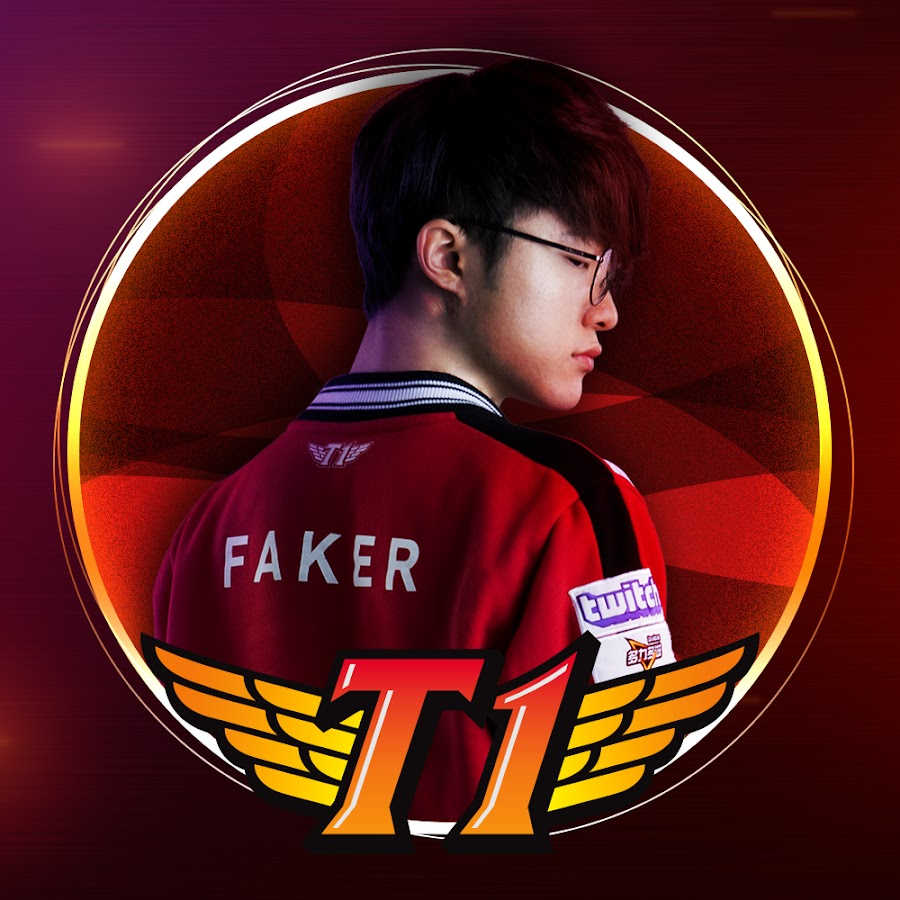
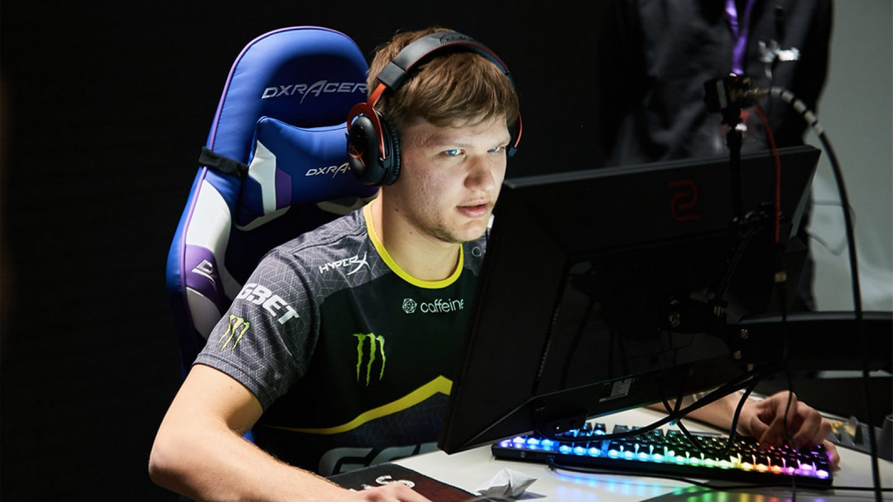

Nombre:Lee Sang-Hyeok
Nacimiento: Seúl, Corea del Sur el 7 de mayo de 1996.
AKA: Faker
Juego: League of Legends

Oleksandr Kostyliev, es un jugador profesional de Counter Strike Global Offensive. Nacido en Kiev, Ukrania el 2 de octubre de 1997.
S1mple es considerado uno de los mejores jugadores de CsGo de la historia. Actualmente juega en Na'Vi ( Natus Vincere)

Oleksandr Kostyliev, es un jugador profesional de Counter Strike Global Offensive. Nacido en Kiev, Ukrania el 2 de octubre de 1997.
S1mple es considerado uno de los mejores jugadores de CsGo de la historia. Actualmente juega en Na'Vi ( Natus Vincere)